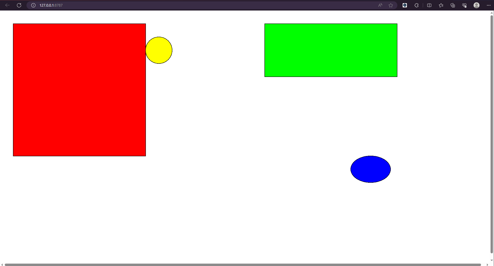

WEEK 4
In this class we got a basic understanding of p5.js and processing, exploring generative art and design.
We also learnt how to generate geometric shapes using p5.js and finally we explored the mysteries of randomness using dice!
We learnt how to use p5.js to create a drawing board in the activity that allows the mouse to act as a brush, with the code line(pmouseX, pmouseY, mouseX, mouseY).
Hold and drag the mouse to draw.
Try in the canvas on the left!
We next learnt how to draw geometric shapes in processing.
Each new line of code in processing is like picking up the brush again, so the way to change the fill colour and stroke of the geometry is to redefine it.

Finally we simulated the game of rolling dice to draw geometric shapes on paper.
In our group's game, we first rolled the 6-point die to determine the shape, and then rolled the 9-point die to determine the fill colour, stroke, position, size, etc.